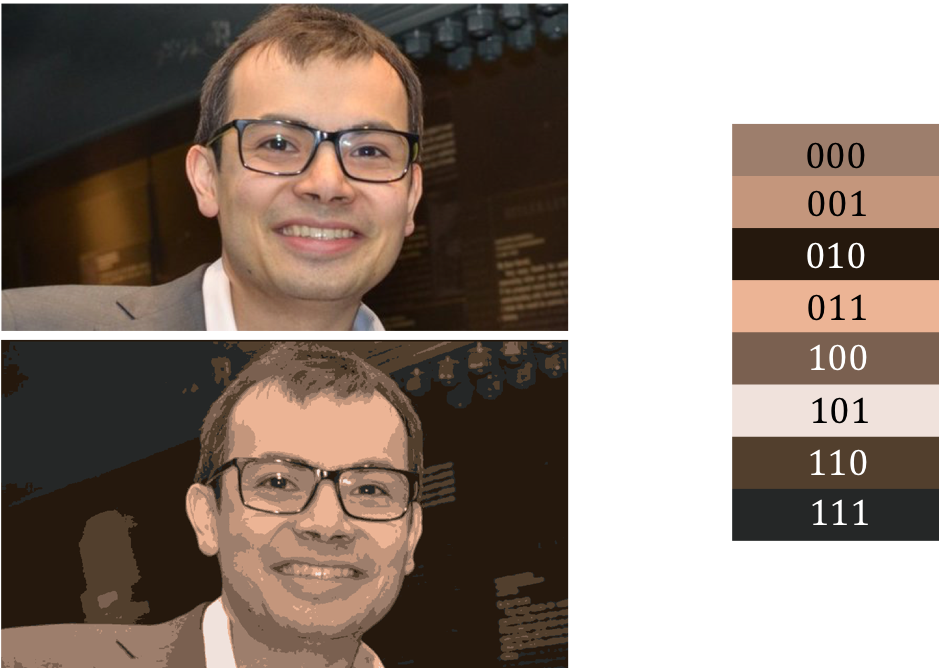

<!doctype html>
<html lang="ja">
  <head>
    <meta charset="utf-8">
    <meta name="viewport" content="width=device-width, initial-scale=1">
    <link rel="stylesheet" href="../../static/css/atom.min.css">
    <!--
      Hi source code lover!!

      I don't want to be a YouTuber.
      I want to make a platform where people can share and learn college knowledge one another.
      If you are interested it, please get in touch with me. (Twitter: @cabernet_rock)
    -->

    <!-- SEO -->
    <title>10 minutes PRML Chapter 9</title>
    <meta name="description" content="Learn Pattern Recognition and Machine Learning in 10 minutes.">

    <!-- URL CANONICAL -->
    <!-- <link rel="canonical" href="http://your-url.com/permalink"> -->

    <!-- Google Fonts -->
    <link href="https://fonts.googleapis.com/css?family=Roboto:100,100i,300,300i,400,400i,700,700i%7CMaitree:200,300,400,600,700&amp;subset=latin-ext" rel="stylesheet">

    <!-- CSS Base -->
    <link rel="stylesheet" type='text/css' media='all' href="prml_static/css/webslides.css">

    <!-- Optional - CSS SVG Icons (Font Awesome) -->
    <link rel="stylesheet" type="text/css" media="all" href="prml_static/css/svg-icons.css">

    <!-- SOCIAL CARDS (Open Graph protocol) -->
    <!-- FACEBOOK -->
    <meta property="og:url" content="https://iwasakishuto.github.io">
    <meta property="og:type" content="article">
    <meta property="og:title" content="10 minutes PRML Chapter 9">
    <meta property="og:description" content="Learn Pattern Recognition and Machine Learning in 10 minutes.">
    <meta property="og:image" content="prml_static/images/share-webslides.jpg" >

    <!-- TWITTER -->
    <meta name="twitter:card" content="summary_large_image">
    <meta name="twitter:creator" content="@cabernet_rock">
    <meta name="twitter:title" content="10 minutes PRML Chapter 9">
    <meta name="twitter:description" content="Learn Pattern Recognition and Machine Learning in 10 minutes.">
    <meta name="twitter:image" content="prml_static/images/share-webslides.jpg">

    <!-- FAVICONS -->
    <link rel="shortcut icon" sizes="16x16" href="prml_static/images/favicons/favicon.png">
    <link rel="shortcut icon" sizes="32x32" href="prml_static/images/favicons/favicon-32.png">
    <link rel="apple-touch-icon icon" sizes="76x76" href="prml_static/images/favicons/favicon-76.png">
    <link rel="apple-touch-icon icon" sizes="120x120" href="prml_static/images/favicons/favicon-120.png">
    <link rel="apple-touch-icon icon" sizes="152x152" href="prml_static/images/favicons/favicon-152.png">
    <link rel="apple-touch-icon icon" sizes="180x180" href="prml_static/images/favicons/favicon-180.png">
    <link rel="apple-touch-icon icon" sizes="192x192" href="prml_static/images/favicons/favicon-192.png">

    <!-- Android -->
    <meta name="mobile-web-app-capable" content="yes">
    <meta name="theme-color" content="#333333">

    <!-- Syntax highlight -->
    <link rel="stylesheet" href="https://cdnjs.cloudflare.com/ajax/libs/highlight.js/8.6/styles/github.min.css">
    <script src="https://cdnjs.cloudflare.com/ajax/libs/highlight.js/8.6/highlight.min.js"></script>
    <script>hljs.initHighlightingOnLoad();</script>
    <!-- Tex -->
    <!-- Local env -->
    <script type="text/javascript" src="http://cdn.mathjax.org/mathjax/latest/MathJax.js?config=TeX-AMS_HTML"></script>
    <!-- Github env -->
    <!--
    <script type="text/javascript" async src="//cdn.mathjax.org/mathjax/latest/MathJax.js?config=TeX-MML-AM_CHTML"></script>
    -->
    <script type="text/x-mathjax-config">
      MathJax.Hub.Config({
        tex2jax: {
          inlineMath: [ ['$','$'], ["\\(","\\)"] ],
          displayMath: [ ['$$','$$'], ["\\[","\\]"] ]
        }
      });
    </script>
    <!-- LaTeX で argmzx・argmin を定義する -->
    $\newcommand{\argmax}{\mathop{\rm arg~max}\limits}$
    $\newcommand{\argmin}{\mathop{\rm arg~min}\limits}$
  </head>

  <body>
    <header role="banner">
      <nav role="navigation">
        <ul>
          <li class="github">
            <a rel="external" href="#" title="YouTube">
              <svg class="fa-youtube">
                <use xlink:href="#fa-youtube"></use>
              </svg>
              <em>Colledge Knowledge</em>
            </a>
          </li>
          <li class="twitter">
            <a rel="external" href="https://twitter.com/cabernet_rock" title="Twitter">
              <svg class="fa-twitter">
                <use xlink:href="#fa-twitter"></use>
              </svg>
              <em>@cabernet_rock</em>
            </a>
          </li>
        </ul>
      </nav>
    </header>

    <main role="main">
      <article id="webslides">

        <!-- Quick Guide
          - Each parent <section> in the <article id="webslides"> element is an individual slide.
          - Vertical sliding = <article id="webslides" class="vertical">
          - <div class="wrap"> = container 90% / <div class="wrap size-50"> = 45%;
        -->

        <section class="bg-apple">
          <h1>§9 Mixture Models and EM</h1>
        </section>

        <section class="bg-apple">
          <div class="wrap">
            <div class="grid vertical-align">
              <div class="column">
                <h2>潜在変数</h2>
                <p class="text-intro">Latent Variables</p>
                <p>観測変数 $\mathbf{X}$ と潜在変数 $\mathbf{Z}$ の同時分布を定義すれば、周辺化によって観測変数だけの周辺分布を得ることができ、それによって比較的複雑な分布を表すことができます。</p>
                <p>また、複雑な確率分布を構成する枠組みを提供するだけでなく、混合モデルをデータのクラスタリングに使うこともできます。</p>
              </div>
              <div class="column">
                <p>この章では、そういった潜在変数を持つモデルの最尤解を求めるための一般的手法である<font color="red"><b>EMアルゴリズム(Expectation Maximization Algorithm)</b></font>について紹介します。</p>
                <p>一般にEMアルゴリズムは大域的収束性は保証しませんが、収束することは保証されているので、モデルの学習の際に利用されることが多いです。</p>
              </div>
            </div>
          </div>
        </section>

        <section class="bg-apple">
          <div class="wrap">
            <div class="grid vertical-align">
              <div class="column">
                <h2>K-means クラスタリング</h2>
                <p>$D$ 次元ユークリッド空間上の確率変数 $\mathbf{x}$ の $N$ 個の観測点で構成されるデータ集合 $\left\{\mathbf{x_1},\ldots,\mathbf{x_N}\right\}$ があるとします。</p>
                <p>ここでの目的はデータ集合を $K$ 個のクラスターに分割することです。したがって、<font color="red"><b>歪み尺度(distortion measure)</b></font>と呼ばれる目的関数
                $$J=\sum_{n=1}^{N} \sum_{k=1}^{K} r_{n k}\left\|\mathbf{x}_{n}-\boldsymbol{\mu}_{k}\right\|^{2}\qquad (9.1)$$を最小化する問題と言うことができます。</p>
              </div>
              <div class="column">
                <p>なお、$\boldsymbol{\mu}_k$ は $k$ 番目のクラスターの中心を表し、$r_{n k}$ はデータ点 $\mathbf{x}_n$ がクラスター $k$ に割り当てられる場合に $1$ それ以外の場合に $0$ をとる二値変数です。</p>
                <p>この問題を解くには、
                  <li>$\boldsymbol{\mu}_k$ を固定しつつ $r_{n k}$ について $J$ を最小化する。</li>
                  <li>$r_{n k}$ を固定しつつ $\boldsymbol{\mu}_k$ について $J$ を最小化する。</li>
                </p>
                <p>という二段階最適化問題を収束するまで繰り返すことになります。</p>
              </div>
            </div>
          </div>
        </section>

        <section class="bg-apple">
          <div class="wrap">
            <div class="grid vertical-align">
              <div class="column">
                <h2>K-means</h2>
                <p class="text-intro">Eステップ</p>
                <p>$$J=\sum_{n=1}^{N} \sum_{k=1}^{K} r_{n k}\left\|\mathbf{x}_{n}-\boldsymbol{\mu}_{k}\right\|^{2}\qquad (9.1)$$は $$r_{nk} について線形の関数なので、最適化は代数的に解くことができます。</p>
                <p>つまり、各 $n$ について独立に $\|\mathbf{x}_n - \boldsymbol{\mu}_k\|$ が最小となるクラスタに対して $r_{nk} = 1$ とすれば良いことになります。</p>
              </div>
              <div class="column">
                <p class="text-intro">Mステップ</p>
                <p>$J$ は $\boldsymbol{\mu}_k$ の二次関数なので、$\boldsymbol{\mu}_k$ に関する $J$ の偏微分
                $$2 \sum_{n=1}^{N} r_{n k}\left(\mathbf{x}_{n}-\boldsymbol{\mu}_{k}\right)=0\qquad (9.3)$$を解くことで求まり、
                $$\boldsymbol{\mu}_{k}=\frac{\sum_{n} r_{n k} \mathbf{x}_{n}}{\sum_{n} r_{n k}}\qquad (9.4)$$</p>
                <p>したがって、$k$ 番目のクラスターに割り当てられたデータ点 $\mathbf{x}$ の平均を $\boldsymbol{\mu}_k$ とすれば良いことになります。</p>
              </div>
            </div>
          </div>
        </section>

        <section class="bg-apple">
          <div class="wrap">
            <div class="grid vertical-align">
              <div class="column">
                <h2>K-means</h2>
                <p>以上の繰り返しを、クラスターの再割り当てが起きなくなるまで繰り返します。各フェーズは対象関数 $J$ の値を減少させるので、このアルゴリズムの収束は保証されています。（ $r_{nk}$ の割り当ては高々有限通りであり、鳩の巣原理から証明可能。）</p>
                <p>また、先ほどの $J$ ではデータ点と $\boldsymbol{\mu}_k$ の非類似度として二乗ユークリッド誤差を利用していましたが、これだと外れ値に対して過敏になってしまうことが問題としてあげられます。</p>
              </div>
              <div class="column">
                <p>したがって、より一般的な非類似度 $\mathcal{V}\left(\mathbf{x}_{n}, \boldsymbol{\mu}_{k}\right)$ を導入し、
                $$\widetilde{J}=\sum_{n=1}^{N} \sum_{k=1}^{K} r_{n k} \mathcal{V}\left(\mathbf{x}_{n}, \boldsymbol{\mu}_{k}\right)\qquad (9.6)$$を最小化するより一般的な K-means クラスタリングを利用することもあります。</p>
              </div>
            </div>
          </div>
        </section>

        <section class="bg-apple">
          <div class="wrap">
            <div class="grid vertical-align">
              <div class="column">
                <h2>K-means の応用</h2>
                <p class="text-intro">画像のセグメンテーション</p>
                <p>K-means を画像に適用することで画像の圧縮を行うことができることを紹介します。</p>
                <p>原画像が{R,G,B}の各 8 bit(0~255) の値からなる N 個の画素を持つと仮定すると、画像全体を送信するのに 24N bit 必要なことになります。</p>
              </div>
              <div class="column">
                <p>この画像の各画素に対して K-means を行い、各画素を K 個の代表ベクトル $\boldsymbol{\mu_k}$ で置き換えると(K色のパレットを用いると言うこと)、1画素あたり $\log_2 K$ bit で済むことになり、K 個の代表ベクトルの色を表すために必要な24K bitと合わせて 24K + N $\log_2 K$ bit で画像全体を送信できることになります。</p>
                <p>この手法は、画素の空間的な位置関係を無視しているので良い画像分割の方法とは言えませんが、画像圧縮においてかなりの威力を発揮します。</p>
              </div>
            </div>
          </div>
        </section>

        <section class="bg-apple">
          <div class="wrap">
            <div class="grid vertical-align">
              <div class="column">
                <h2>K-means の応用</h2>
                <p class="text-intro">sample</p>
                <p>例えば、以下のように画像に K-means(K=8) を行います。</p>
                <figure>
                  
                </figure>
              </div>
              <div class="column">
                <p>この時、上の画像だと一つの画素を表すのに {R,G,B}の各 8 bit の計 24 bit が必要でしたが、下の画像では 3 bit で済みます。</p>
                <p>もちろんそれによって多くの情報が失われていますが、それでもかの有名な DeepMind の CEO である Demis Hassabis であることはわかります。</p>
                <p>サンプルプログラムは<a href="prml_static/images/Chap9/segmentation.py" download="segmentation.py">これ</a>になります。ぜひ遊んでみてください。</p>
              </div>
            </div>
          </div>
        </section>

        <section class="bg-apple">
          <div class="wrap">
            <div class="grid vertical-align">
              <div class="column">
                <h2>混合ガウス分布</h2>
                <p class="text-intro">Gaussian mixture model</p>
                <p>Chap2 では、ガウス分布の単純な線形重ね合わせとして混合ガウス分布を導入しましたが、単一のガウス分布よりも豊かな確率密度のモデルを作成することが出来ました。</p>
                <p>ここでは、離散的な潜在変数を用いた混合ガウス分布の定式化を行います。</p>
              </div>
              <div class="column">
                <p>まず、$K$ 次元の２値確率変数(1-of-K 符号化法) $\mathbf{z}$ を導入します。$z_k\in\{0,1\}$ は $\sum_k z_k = 1$ を満たすため、$0$ でない要素がどれかに応じて、ベクトル $\mathbf{z}$ は $K$ 種類の状態を取ります。</p>
                <p>それでは、周辺分布 $p(\mathbf{z})$ 条件付き分布 $p(\mathbf{x}|\mathbf{z})$ を考え、それらを用いて同時分布 $p(\mathbf{x},\mathbf{z})$ を定義します。</p>
                <p>これを $\mathbf{z}$ に関して周辺化する事でデータ $\mathbf{x}$ の分布 $p(\mathbf{x})$ を表すことが出来ます。</p>
              </div>
            </div>
          </div>
        </section>

        <section class="bg-apple">
          <div class="wrap">
            <div class="grid vertical-align">
              <div class="column">
                <h2>混合ガウス分布</h2>
                <p class="text-intro">周辺分布 $p(\mathbf{z})$</p>
                <p>$\mathbf{z}$ の周辺分布は以下のように、混合係数 $\pi_k$ によって定まり、
                $$p(z_k=1) = \pi_k$$と定義できます。なお、$\{\pi_k\}$ は確率であるための条件を満たすものとします。</p>
                <p>また、$\mathbf{z}$ には 1-of-K 符号化法を用いるので、この分布は次のように書くこともできます。</p>
                $$p ( \mathbf { z } ) = \prod _ { k = 1 } ^ { K } \pi _ { k } ^ { z _ { k } }\qquad (9.10)$$
              </div>
              <div class="column">
                <p class="text-intro">条件付き分布 $p(\mathbf{x}|\mathbf{z})$</p>
                <p>同様に、$\mathbf{z}$ の値が与えられた下での $\mathbf{x}$ の条件付き分布は、次のガウス分布で表すことができます。
                $$p ( \mathbf { x } | z _ { k } = 1 ) = \mathcal { N } ( \mathbf { x } | \boldsymbol { \mu } _ { k } , \boldsymbol { \Sigma } _ { k } )$$</p>
                <p>なお、先ほど同様以下の形で書くことができます。
                $$p ( \mathbf { x } | \mathbf { z } ) = \prod _ { k = 1 } ^ { K } \mathcal { N } ( \mathbf { x } | \boldsymbol { \mu } _ { k } , \boldsymbol { \Sigma } _ { k } ) ^ { z _ { k } }\qquad (9.11)$$</p>
              </div>
            </div>
          </div>
        </section>

        <section class="bg-apple">
          <div class="wrap">
            <div class="grid vertical-align">
              <div class="column">
                <h2>混合ガウス分布</h2>
                <p class="text-intro">周辺分布 $p(\mathbf{x})$</p>
                <p>同時分布は $p(\mathbf{x},\mathbf{z})$ のように書けるので、$\mathbf{z}$ の取り得る状態すべてにわたって総和を取ることで、
                $$p ( \mathbf { x } ) = \sum _ { \mathbf { z } } p ( \mathbf { z } ) p ( \mathbf { x } | \mathbf { z } ) = \sum _ { k = 1 } ^ { K } \pi _ { k } \mathcal { N } ( \mathbf { x } | \boldsymbol { \mu } _ { k } , \mathbf { \Sigma } _ { k } )\qquad (9.12)$$</p>
                <p>として表されますが、これは混合ガウス分布そのものです。</p>
                <p>したがって、混合ガウス分布を陽に潜在変数を含む別な形で表すことができました。この表現のメリットは同時分布 $p(\mathbf{x},\mathbf{z})$ を使った議論が可能になることで、これによって EM アルゴリズムを導入できます。</p>
              </div>
              <div class="column">
                <p>左の計算の流れを、k=2 の場合で追います。
                  $$\begin{aligned}
                  \sum _ { z } p ( z ) p ( \boldsymbol { x } | z )
                  & = \sum _ { z } \prod _ { k = 1 } ^ { 2 } \pi _ { k } ^ { z _ { k } } \prod _ { k = 1 } ^ { 2 } \mathcal { N } ( \boldsymbol { x } | \boldsymbol { \mu } _ { k } , \Sigma _ { k } ) ^ { z _ { k } } \\
                  & = \sum _ { z } \left( \pi _ { 1 } ^ { z _ { 1 } } \pi _ { 2 } ^ { z _ { 2 } } \right) \left( \mathcal { N } ( \boldsymbol { x } | \boldsymbol { \mu } _ { 1 } , \Sigma _ { 1 } ) ^ { z _ { 1 } } \mathcal { N } ( \boldsymbol { x } | \boldsymbol { \mu } _ { 2 } , \Sigma _ { 2 } ) ^ { z _ { 2 } } \right.\\
                  & = \left( \pi _ { 1 } ^ { 1 } \pi _ { 2 } ^ { 0 } \right) \left( \mathcal { N } ( \boldsymbol { x } | \boldsymbol { \mu } _ { 1 } , \Sigma _ { 1 } ) ^ { 1 } \mathcal { N } ( \boldsymbol { x } | \boldsymbol { \mu } _ { 2 } , \Sigma _ { 2 } ) ^ { 0 } \right. + \left( \pi _ { 1 } ^ { 0 } \pi _ { 2 } ^ { 1 } \right) \left( \mathcal { N } ( \boldsymbol { x } | \boldsymbol { \mu } _ { 1 } , \Sigma _ { 1 } ) ^ { 0 } \mathcal { N } ( \boldsymbol { x } | \boldsymbol { \mu } _ { 2 } , \Sigma _ { 2 } ) ^ { 1 } \right.\\
                  & = \pi _ { 1 } \mathcal { N } ( \boldsymbol { x } | \boldsymbol { \mu } _ { 1 } , \Sigma _ { 1 } ) + \pi _ { 2 } \mathcal { N } ( \boldsymbol { x } | \boldsymbol { \mu } _ { 2 } , \Sigma _ { 2 } ) \\
                  & = \sum _ { k = 1 } ^ { 2 } \pi _ { k } \mathcal { N } ( \boldsymbol { x } | \boldsymbol { \mu } _ { k } , \Sigma _ { k } )
                  \end{aligned}$$</p>
              </div>
            </div>
          </div>
        </section>

        <section class="bg-apple">
          <div class="wrap">
            <div class="grid vertical-align">
              <div class="column">
                <h2>負担率</h2>
                <p class="text-intro">responsibility</p>
                <p>もう一つ重要な値を考えます。それは、$\mathbf{x}$ が与えられた下での $\mathbf{z}$ の条件付き確率です。</p>
                <p>ここで、$\gamma (z_k)$ で $p(z_k = 1| \mathbf{x})$ を表します。この値は、次のようにベイズの定理を用いて得ることができます。
                  $$\begin{aligned}
                  \gamma \left( z _ { k } \right) \equiv p \left( z _ { k } = 1 | \mathbf { x } \right)
                  & = \frac { p \left( z _ { k } = 1 \right) p ( \mathbf { x } | z _ { k } = 1 ) } { p (\mathbf{x})}\\
                  & = \frac { p \left( z _ { k } = 1 \right) p ( \mathbf { x } | z _ { k } = 1 ) } { \sum _ { j = 1 } ^ { K } p \left( z _ { j } = 1 \right) p ( \mathbf { x } | z _ { j } = 1 ) } \\
                  & = \frac { \pi _ { k } \mathcal { N } ( \mathbf { x } | \boldsymbol { \mu } _ { k } , \boldsymbol { \Sigma } _ { k } ) } { \sum _ { j = 1 } ^ { K } \pi _ { j } \mathcal { N } ( \mathbf { x } | \boldsymbol { \mu } _ { j } , \boldsymbol { \Sigma } _ { j } ) } \qquad (9.13)
                  \end{aligned}$$</p>
              </div>
              <div class="column">
                <ul class="description">
                  <li>
                    <span class="text-label">$\pi_k$</span>
                    $z_k = 1$ となる事象の事前確率
                  </li>
                  <li>
                    <span class="text-label">$\gamma (z_k)$</span>
                    $\mathbf{x}$ を観測した時の対応する事後確率
                  </li>
                </ul>
                <p>とみなすことができ、そうすると $\gamma (z_k)$ は混合要素 k が $\mathbf{x}$ の観測を「説明する」度合いを表す<font color="red"><b>負担率(responsibility)</b></font>としても解釈できます。</p>
              </div>
            </div>
          </div>
        </section>

        <section class="bg-apple">
          <div class="wrap">
            <div class="grid vertical-align">
              <div class="column">
                <h2>EM アルゴリズム</h2>
                <p class="text-intro">Expectation-Maximization algorithm</p>
                <p>それでは観測データ集合 $\{\mathbf{x}_1,\ldots,\mathbf{x}_N\}$ に混合ガウス分布を当てはめる問題を考えます。この時、 (9.12) より、尤度関数は以下のようにかけます。
                $$\ln p ( \mathbf { X } | \boldsymbol { \pi } , \boldsymbol { \mu } , \mathbf { \Sigma } ) = \sum _ { n = 1 } ^ { N } \ln \left\{ \sum _ { k = 1 } ^ { K } \pi _ { k } \mathcal { N } \left( \mathbf { x } _ { n } | \boldsymbol { \mu } _ { k } , \boldsymbol { \Sigma } _ { k } \right) \right\}\qquad (9.14)$$</p>
                <p>この尤度関数を、ガウス要素の $\boldsymbol { \pi } , \boldsymbol { \mu } , \mathbf { \Sigma }$ に関して微分することで尤度関数の最大点を求めます。</p>
              </div>
              <div class="column">
                <p class="text-intro">ガウス要素の平均 $\boldsymbol { \mu }$</p>
                <p>まず、平均 $\boldsymbol { \mu }_k$ に関して微分して 0 とおくと、
                $$\frac { \partial } { \partial \mathbf { x } } \left( \mathbf { x } ^ { T } \mathbf { A } \mathbf { x } \right) = 2 \mathbf { A } \mathbf { x }$$より、
                $$0 = - \sum _ { n = 1 } ^ { N } \underbrace { \frac { \pi _ { k } \mathcal { N } \left( \mathbf { x } _ { n } | \boldsymbol { \mu } _ { k } , \boldsymbol { \Sigma } _ { k } \right) } { \sum _ { j } \pi _ { j } \mathcal { N } \left( \mathbf { x } _ { n } | \boldsymbol { \mu } _ { j } , \mathbf { \Sigma } _ { j } \right) } } _ { \gamma \left( z _ { n k } \right) } \boldsymbol { \Sigma } _ { k } ^ { -1 } \left( \mathbf { x } _ { n } - \boldsymbol { \mu } _ { k } \right) \qquad (9.16)$$</p>
                <p>したがって、以下のように整理できます。
                $$\begin{array} { l }
                { \boldsymbol { \mu } _ { k } = \frac { 1 } { N _ { k } } \sum _ { n = 1 } ^ { N } \gamma \left( z _ { n k } \right) \mathbf { x } _ { n } } & (9.17)\\
                { N _ { k } = \sum _ { n = 1 } ^ { N } \gamma \left( z _ { n k } \right) } & (9.18)
                \end{array}$$</p>
              </div>
            </div>
          </div>
        </section>

        <section class="bg-apple">
          <div class="wrap">
            <div class="grid vertical-align">
              <div class="column">
                <p class="text-intro">ガウス要素の分散 $\boldsymbol { \Sigma }$</p>
                <p>同様に $\boldsymbol { \Sigma }_k$ で微分すると、
                $$\begin{aligned}
                & \frac{\partial}{\partial\boldsymbol{\Sigma}_k}\mathcal{N}(\mathbf{x}_n|\boldsymbol{\mu}_k,\boldsymbol{\Sigma}_k)\\
                & =\frac{\partial}{\partial\boldsymbol{\Sigma}_k}\frac{1}{(2\pi)^{D/2}}\frac{1}{|\boldsymbol{\Sigma}_k|^{1/2}}\exp\left\{-\frac{1}{2}(\mathbf{x}_n-\boldsymbol{\mu}_k)^T\boldsymbol{\Sigma}_k^{-1}(\mathbf{x}_n-\boldsymbol{\mu}_k)\right\}\\
                & =\frac{1}{(2\pi)^{D/2}}\biggl(\frac{\partial}{\partial\boldsymbol{\Sigma}_k}\frac{1}{|\boldsymbol{\Sigma}_k|^{1/2}}\biggr)\exp\left\{-\frac{1}{2}(\mathbf{x}_n-\boldsymbol{\mu}_k)^T\boldsymbol{\Sigma}_k^{-1}(\mathbf{x}_n-\boldsymbol{\mu}_k)\right\}\\
                & +\frac{1}{(2\pi)^{D/2}}\frac{1}{|\boldsymbol{\Sigma}_k|^{1/2}}\frac{\partial}{\partial\boldsymbol{\Sigma}_k}\exp\left\{-\frac{1}{2}(\mathbf{x}_n-\boldsymbol{\mu}_k)^T\boldsymbol{\Sigma}_k^{-1}(\mathbf{x}_n-\boldsymbol{\mu}_k)\right\}\\
                & =\color{red}{\frac{1}{(2\pi)^{D/2}}\biggl(-\frac{1}{2}\biggr)|\boldsymbol{\Sigma}_k|^{-1/2}\boldsymbol{\Sigma}_k^{-1}\exp\left\{-\frac{1}{2}(\mathbf{x}_n-\boldsymbol{\mu}_k)^T\boldsymbol{\Sigma}_k^{-1}(\mathbf{x}_n-\boldsymbol{\mu}_k)\right\}}\\
                & +\color{red}{\frac{1}{(2\pi)^{D/2}}\frac{1}{|\boldsymbol{\Sigma}_k|^{1/2}}\frac{1}{2}\exp\left\{-\frac{1}{2}(\mathbf{x}_n-\boldsymbol{\mu}_k)^T\boldsymbol{\Sigma}_k^{-1}(\mathbf{x}_n-\boldsymbol{\mu}_k)\right\}\boldsymbol{\Sigma}_k^{-1}(\mathbf{x}_n-\boldsymbol{\mu}_k)(\mathbf{x}_n-\boldsymbol{\mu}_k)^{T}\boldsymbol{\Sigma}_k^{-1}}\\
                & =-\frac{1}{2}\boldsymbol{\Sigma}_k^{-1}\mathcal{N}(\mathbf{x}_n|\boldsymbol{\mu}_k,\boldsymbol{\Sigma}_k)+\frac{1}{2}\boldsymbol{\Sigma}_k^{-1}(\mathbf{x}_n-\boldsymbol{\mu}_k)(\mathbf{x}_n-\boldsymbol{\mu}_k)^{T}\boldsymbol{\Sigma}_k^{-1}\mathcal{N}(\mathbf{x}_n|\boldsymbol{\mu}_k,\boldsymbol{\Sigma}_k)\\
                & =\frac{1}{2}\left\{\boldsymbol{\Sigma}_k^{-1}-\boldsymbol{\Sigma}_k^{-1}(\mathbf{x}_n-\boldsymbol{\mu}_k)(\mathbf{x}_n-\boldsymbol{\mu}_k)^{T}\boldsymbol{\Sigma}_k^{-1}\right\}\mathcal{N}(\mathbf{x}_n|\boldsymbol{\mu}_k,\boldsymbol{\Sigma}_k)
                \end{aligned}$$</p>
              </div>
              <div class="column">
                <p>となるので、
                $$\begin{aligned}
                \frac{\partial}{\partial\boldsymbol{\Sigma}_k}\ln p
                & = \sum_{n=1}^N \frac{\pi_k\frac{\partial}{\partial\boldsymbol{\Sigma}_k}\mathcal{N}(\mathbf{x}_n|\boldsymbol{\mu}_k,\boldsymbol{\Sigma}_k)}{\sum_j \pi_j \mathcal{N}(\mathbf{x}_n|\boldsymbol{\mu}_j,\boldsymbol{\Sigma}_j)}\\
                & = \sum_{n=1}^N \gamma \left( z _ { n k } \right) \frac{1}{2} \left\{ \boldsymbol{\Sigma}_k^{-1} - \boldsymbol{\Sigma}_k^{-1} (\mathbf{x}_n-\boldsymbol{\mu}_k) (\mathbf{x}_n-\boldsymbol{\mu}_k)^{T} \boldsymbol{\Sigma}_k^{-1}\right\} = 0
                \end{aligned}$$</p>
                <p>したがって、
                $$\boldsymbol { \Sigma } _ { k } = \frac { 1 } { N _ { k } } \sum _ { n = 1 } ^ { N } \gamma \left( z _ { n k } \right) \left( \mathbf { x } _ { n } - \boldsymbol { \mu } _ { k } \right) \left( \mathbf { x } _ { n } - \boldsymbol { \mu } _ { k } \right) ^ { \mathrm { T } } \qquad (9.19) $$</p>
              </div>
            </div>
          </div>
        </section>

        <section class="bg-apple">
          <div class="wrap">
            <div class="grid vertical-align">
              <div class="column">
                <h2>補足</h2>
                <p>先ほどの式の赤い部分を説明するにあたり、いくつか行列の基本事項をまとめておきます。</p>
                <p class="text-intro">行列式</p>
                <p>$$\det A=\displaystyle\sum_{\sigma\in S_n}\mathrm{sgn}(\sigma)\prod_{i=1}^na_{i\sigma(i)}=\displaystyle\sum_{\sigma\in S_n}\mathrm{sgn}(\sigma)a_{1\sigma(1)}a_{2\sigma(2)}\cdots a_{n\sigma(n)}$$</p>
                <li>$\sigma$ は $1$ から $n$ の置換（順列）を表す。</li>
                <li>$\mathrm{sgn}(\sigma)$ は置換の符号を表す。なお、置換の符号は<b>互換の数</b>に注目しており、奇置換（互換の数が奇数個）なら $-1$、偶置換なら $+1$ </li>
              </div>
              <div class="column">
                <p class="text-intro">余韻子</p>
                <p>$n$ 次正方行列 $A := (a_{ij})$ に対し、$i$ 行と $i$ 列を$1$つずつ取り去って作られる小行列を $M_{ij}$ とします。つまり、
                $$
                M_{ij} = \small \left[
                \begin{array}{ccc}
                a_{11} & \cdots &a_{1\hspace{1mm}j-1}  & a_{1\hspace{1mm}j+1} & \cdots & a_{1n}
                \\
                \vdots & &\vdots &  \vdots & &\vdots
                \\
                a_{i-1 \hspace{1mm} 1} & \cdots &a_{i-1\hspace{1mm}j-1}  & a_{i-1\hspace{1mm}j+1} & \cdots & a_{i-1 \hspace{1mm}n}
                \\
                a_{i+1 \hspace{1mm} 1} & \cdots &a_{i+1\hspace{1mm}j-1}  & a_{i+1\hspace{1mm}j+1} & \cdots & a_{i+1 \hspace{1mm}n}
                \\
                \vdots & &\vdots & \vdots & &\vdots
                \\
                a_{n1} &\cdots &a_{n\hspace{1mm}j-1}  & a_{n\hspace{1mm}j+1} &\cdots &a_{nn}
                \end{array}
                \right]
                $$です。</p>
                <p>ここで、$\Delta_{ij}=(-1)^{i+j}|M_{ij}|$ とすると、次の<font color="red"><b>余因子展開</b></font>ができます。</p>
                </p>
              </div>
            </div>
          </div>
        </section>

        <section class="bg-apple">
          <div class="wrap">
            <div class="grid vertical-align">
              <div class="column">
                <p class="text-intro">余韻子展開</p>
                <p>$\Delta_{ij}=(-1)^{i+j}|M_{ij}|$ とします。</p>
                <li>$A$ の行列式は $j$ 列に関して、以下のように展開されます。
                $$\det A=\Delta_{1j}a_{1j}+\Delta_{2j}a_{2j}+\cdots+\Delta_{nj}a_{nj}$$</li>
                <li>$A$ の行列式は $i$ 行に関して、以下のように展開されます。
                $$\det A=\Delta_{i1}a_{i1}+\Delta_{i2}a_{i2}+\cdots+\Delta_{in}a_{in}$$</li>
              </div>
              <div class="column">
                <p class="text-intro">余韻子行列</p>
                <p>$n$ 次正方行列 $A := (a_{ij})$ に対し、$(i, j)$ 余因子を $(j, i)$ 成分に持つ行列
                $$\tilde{A} := \begin{pmatrix}&\Delta_{11}&\Delta_{21}&\cdots&\Delta_{n1}\\&\Delta_{21}&\Delta_{22}&\ldots&\Delta_{n2}\\&\vdots&\vdots&\ddots&\vdots\\&\Delta_{n1}&\Delta_{n2}&\cdots&\Delta_{nn}\end{pmatrix}$$
                を<font color="red"><b>余韻子行列</b></font>と呼びます。</p>
                <p>ここで、余韻子展開を考えれば、余韻子行列に関して、
                $$\tilde{A}A=A\tilde{A}=\det(A)I_n$$
                が成り立つことがわかります。</p>
              </div>
            </div>
          </div>
        </section>

        <section class="bg-apple">
          <div class="wrap">
            <div class="grid vertical-align">
              <div class="column">
                <p>以上を踏まえると、$\frac{\partial\det(A)}{\partial a_{ij}} = \Delta_{ij}$ なので、
                $$\frac{\partial|\Sigma|}{\partial\Sigma}
                =\tilde\Sigma = |\Sigma|\Sigma^{-1}$$
                が成り立つので、
                $$\color{red}{\frac{\partial}{\partial\boldsymbol{\Sigma}_c}\frac{1}{|\boldsymbol{\Sigma}_c|^{1/2}}
                =-\frac{1}{2}|\boldsymbol{\Sigma}_c|^{-\frac{3}{2}}\frac{\partial}{\partial\boldsymbol{\Sigma}_c}\boldsymbol{\Sigma_c}=-\frac{1}{2}|\boldsymbol{\Sigma}_c|^{-1/2}\boldsymbol{\Sigma_c}^{-1}}$$</p>
                <p>となることが説明できます。</p>
                <p>もう一方の説明もするために、まだ補足説明を続けます。</p>
              </div>
              <div class="column">
                <p class="text-intro">トレース</p>
                <p>$n\times n$ の正方行列 $A$ に対して、対角成分の和 $\sum_{k=1}^{n}a_{kk}$ を $A$ のトレースと呼び、$\mathrm{Tr}(A),\mathrm{tr}A$  と表します。</p>
                <p>トレースには、$Tr(A) = \sum_{k=1}^{n}\lambda_{k}$ という関係があります。この関係については、次のページで説明します。</p>
              </div>
            </div>
          </div>
        </section>

        <section class="bg-apple">
          <div class="wrap">
            <div class="grid vertical-align">
              <div class="column">
                <h2>トレースと固有値</h2>
                <p class="text-intro">$Tr(A) = \sum_{k=1}^{n}\lambda_{k}$</p>
                <p>まず、固有方程式は、
                $$\phi(t) = |A-tI| = \left|\begin{array}{cccc}
                  a_{11}-t & a_{12} & \ldots & a_{1n} \\
                  a_{21} & a_{22}-t & \ldots & a_{2n} \\
                  \vdots & \vdots & \ddots & \vdots \\
                  a_{n1} & a_{n2} & \ldots & a_{nn}-t
                \end{array}
                \right|$$です。ここで、$t$ の係数に着目します。</p>
                <li>$t^n$ の係数</li>
                <p>これは、対角成分を全て掛け合わせた次の多項式
                $$(a_{11}-t)(a_{22}-t)\ldots(a_{nn}-t)$$
                における $t^n$ の係数と等しくなります。よって、係数は「$(-1)^n$」</p>
              </div>
              <div class="column">
                <li>$t^{n-1}$ の係数</li>
                <p>これも、余韻子展開を考えることで先ほどの多項式の $t^{n-1}$ の係数と等しくなることがわかります。</p>
                <p>というのも $\sigma$ が全単射のため、１行（列）対角成分ではないものがあると、少なくともあと１つは対角成分でないものがあるはずだからです。</p>
                <li>定数項</li>
                <p>これは、余韻子展開を考えれば $|A|$ そのものです。</p>
                <p>よって係数は「$(-1)^{n-1}(a_{11}+a_{22}+\ldots+a_{nn})$」であり、これは対角和を用いて「<font color="red"><b>$(-1)^{n-1}\mathrm{Tr}(A) $</b></font>」とも書けます。</p>
              </div>
            </div>
          </div>
        </section>

        <section class="bg-apple">
          <div class="wrap">
            <div class="grid vertical-align">
              <div class="column">
                <p class="text-intro">トレースと固有値</p>
                <p>さて、一方先ほどの固有方程式は固有値を解に持ちます。</p>
                <p>つまり、$A$の固有値を$\lambda_1$〜$\lambda_n$として、
                $$\phi(t)=(-1)^n(t-\lambda_1)(t-\lambda_2)\cdots(t-\lambda_n)$$
                とかけます。（ $(-1)^n$ によって、$t^n$ の係数を合わせている。）</p>
                <p>この式を展開すると、$t^{n-1}$ の係数が「$(-1)^{n-1}(\lambda_1+\lambda_2+\ldots+\lambda_n)$」であることから
                $$\mathrm{Tr}(A) = \lambda_1+\lambda_2+\ldots+\lambda_n$$</p>
                <p>※ちなみに、$\phi(t)=(-1)^n(t-\lambda_1)(t-\lambda_2)\cdots(t-\lambda_n)$ の定数項を考えることで、$$|A| = \lambda_1\lambda_2\ldots\lambda_n$$であることもわかります。</p>
              </div>
              <div class="column">
                <p class="text-intro">トレースの循環性</p>
                <p>$A$ を $m \times n$、$B$ を $n \times m$ の行列とすると、$AB$ は $m \times m$ の行列であり、
                $$
                \begin{aligned}
                \mathrm{Tr}[AB]&= \sum_{i=1}^{m} (AB)_{ii}
                \\&= \sum_{i=1}^{m}\sum_{j=1}^{n} A_{ij}B_{ji}
                \\&= \sum_{j=1}^{n} \sum_{i=1}^{m} B_{ji} A_{ij}
                \\&= \sum_{j=1}^{n} (BA)_{jj}
                \\&= \mathrm{Tr}[BA]
                \end{aligned}
                $$となります。これを応用すれば、以下の<font color="red"><b>循環性</b></font>が証明できます。
                $$\begin{aligned}
                \mathrm{Tr}[ABC] =& \mathrm{Tr}[BCA]
                \\=& \mathrm{Tr}[CAB]
                \end{aligned}
                $$</p>
              </div>
            </div>
          </div>
        </section>

        <section class="bg-apple">
          <div class="wrap">
            <div class="grid vertical-align">
              <div class="column">
                <p class="text-intro">逆行列の微分</p>
                <p>正則行列 $A$ に対して、$A^{-1}A=I$ が成立するので、この等式の両辺を $A$ で微分して、
                $$\begin{aligned}
                \biggr(\frac{\partial }{\partial A}A^{-1}\biggl)A + A^{-1}\biggr(\frac{\partial }{\partial A}A\biggl) = 0\\
                \biggr(\frac{\partial A^{-1}}{\partial A}\biggl) = -A^{-1}\biggr(\frac{\partial }{\partial A}A\biggl)A^{-1}
                \end{aligned}$$</p>
              </div>
              <div class="column">
                <p class="text-intro">シングルエントリ行列</p>
                <p>$(i,j)$ 成分のみが$1$ で、残りが全て $0$ の行列 $\mathbf{J}^{ij}$ を<font color="red"><b>シングルエントリ行列</b></font>と呼びます。なお、以下の式が成り立ちます。
                $$\mathrm{Tr}\bigr(\mathbf{AJ}^{ij}\bigl)=\mathbf{A}_{ji}$$</p>
                <p>$2 \times 2$ の行列でこれを示します。
                $$\begin{aligned}
                \mathrm{Tr}\bigr(\mathbf{AJ}^{12}\bigl)&=\mathrm{Tr}\biggr(\begin{pmatrix}a_{11}&a_{12}\\a_{21}&a_{22}\end{pmatrix}\begin{pmatrix}0&1\\0&0\end{pmatrix}\biggl)\\
                &=\mathrm{Tr}\begin{pmatrix}0&a_{11}\\0&a_{21}\end{pmatrix}\\
                &=a_{21}\\
                &=\mathbf{A}_{21}
                \end{aligned}$$</p>
              </div>
            </div>
          </div>
        </section>

        <section class="bg-apple">
          <div class="wrap">
            <div class="grid vertical-align">
              <div class="column">
                <p>以上を踏まえると、
                  $$\begin{aligned}
                  & \frac{\partial}{\partial\boldsymbol{\Sigma}_{ij}}(\mathbf{x}-\boldsymbol{\mu})^T\boldsymbol{\Sigma}^{-1}(\mathbf{x}-\boldsymbol{\mu})\\
                  & =\frac{\partial}{\partial\boldsymbol{\Sigma}_{ij}}\mathrm{Tr}\biggr((\mathbf{x}-\boldsymbol{\mu})^T\boldsymbol{\Sigma}^{-1}(\mathbf{x}-\boldsymbol{\mu})\biggl)\\
                  & =\frac{\partial}{\partial\boldsymbol{\Sigma}_{ij}}\mathrm{Tr}\biggr(\boldsymbol{\Sigma}^{-1}(\mathbf{x}-\boldsymbol{\mu})(\mathbf{x}-\boldsymbol{\mu})^{T}\biggl)\\
                  & =\mathrm{Tr}\biggr(\frac{\partial}{\partial\boldsymbol{\Sigma}_{ij}}\boldsymbol{\Sigma}^{-1}(\mathbf{x}-\boldsymbol{\mu})(\mathbf{x}-\boldsymbol{\mu})^{T}\biggl)\\
                  & =\mathrm{Tr}\biggr(-\boldsymbol{\Sigma}^{-1}\frac{\partial\boldsymbol{\Sigma}}{\partial\boldsymbol{\Sigma}_{ij}}\boldsymbol{\Sigma}^{-1}(\mathbf{x}-\boldsymbol{\mu})(\mathbf{x}-\boldsymbol{\mu})^{T}\biggl)\\
                  & =\mathrm{Tr}\biggr(-\boldsymbol{\Sigma}^{-1}\mathbf{J}^{ij}\boldsymbol{\Sigma}^{-1}(\mathbf{x}-\boldsymbol{\mu})(\mathbf{x}-\boldsymbol{\mu})^{T}\biggl)\\
                  & =-\mathrm{Tr}\biggr(\boldsymbol{\Sigma}^{-1}\mathbf{J}^{ij}\boldsymbol{\Sigma}^{-1}(\mathbf{x}-\boldsymbol{\mu})(\mathbf{x}-\boldsymbol{\mu})^{T}\biggl)\\
                  & =-\mathrm{Tr}\biggr(\boldsymbol{\Sigma}^{-1}(\mathbf{x}-\boldsymbol{\mu})(\mathbf{x}-\boldsymbol{\mu})^{T}\boldsymbol{\Sigma}^{-1}\mathbf{J}^{ij}\biggl)\\
                  & =-\left\{\boldsymbol{\Sigma}^{-1}(\mathbf{x}-\boldsymbol{\mu})(\mathbf{x}-\boldsymbol{\mu})^{T}\boldsymbol{\Sigma}^{-1}\right\}_{ji}\\
                  & =-\left\{\boldsymbol{\Sigma}^{-1}(\mathbf{x}-\boldsymbol{\mu})(\mathbf{x}-\boldsymbol{\mu})^{T}\boldsymbol{\Sigma}^{-1}\right\}_{ij}\\
                  \end{aligned}$$</p>
              </div>
              <div class="column">
                <p>よって、
                $$\color{red}{\frac{\partial}{\partial\boldsymbol{\Sigma}}(\mathbf{x}-\boldsymbol{\mu})^T\boldsymbol{\Sigma}^{-1}(\mathbf{x}-\boldsymbol{\mu})=-\boldsymbol{\Sigma}^{-1}(\mathbf{x}-\boldsymbol{\mu})(\mathbf{x}-\boldsymbol{\mu})^{T}\boldsymbol{\Sigma}^{-1}}$$</p>
                <p>がわかります。</p>
              </div>
            </div>
          </div>
        </section>

        <section class="bg-apple">
          <div class="wrap">
            <div class="grid vertical-align">
              <div class="column">
                <p class="text-intro">混合係数 $\pi_k$</p>
                <p>混合係数に関しては、各パラメータの総和が $1$ になるという制約条件を考慮しなくてないけないので、
                $$L _ { \lambda } = \ln p ( \mathbf { X } | \boldsymbol { \pi } , \boldsymbol { \mu } , \mathbf { \Sigma } ) + \lambda \left( \sum _ { k = 1 } ^ { K } \pi _ { k } - 1 \right) \qquad (9.20)$$
                を $\pi_k$ で微分して $0$ とおく必要があります</p>
              </div>
              <div class="column">
                <p>したがって、
                $$\begin{aligned}
                \frac { \partial L _ { \lambda } } { \partial \pi _ { k } }
                & = \sum _ { n = 1 } ^ { N } \frac { \mathcal { N } \left( \mathbf { x } _ { n } | \boldsymbol { \mu } _ { k } , \boldsymbol { \Sigma } _ { k } \right) } { \sum _ { j } \pi _ { j } \mathcal { N } \left( \mathbf { x } _ { n } | \boldsymbol { \mu } _ { j } , \boldsymbol { \Sigma } _ { j } \right) } + \lambda \\
                & = \sum _ { n = 1 } ^ { N } \frac { \boldsymbol { r } _ { i k } } { \pi _ { k } } + \lambda = 0 \quad \therefore \pi _ { k } = - \frac { 1 } { \lambda } \sum _ { n = 1 } ^ { N } r _ { n k } \\
                \frac { \partial L _ { \lambda } } { \partial \lambda }
                & = \sum _ { k = 1 } ^ { K } \pi _ { k } - 1 \\
                & = \left( - \frac { 1 } { \lambda } \sum _ { k = 1 } ^ { K } \sum _ { n = 1 } ^ { N } r _ { n k } \right) - 1 = 0 \quad \therefore \lambda = - N \end{aligned}$$</p>
                <p>これより、
                $$\pi _ { k } = \frac { N _ { k } } { N }\qquad (9.22)$$</p>
              </div>
            </div>
          </div>
        </section>

        <section class="bg-apple">
          <div class="wrap">
            <div class="grid vertical-align">
              <div class="column">
                <h2>EM法</h2>
                <p class="text-intro">Expectation Maximization法</p>
                <p>以上より、それぞれのパラメータについて更新式が得られました。</p>
                <p>ここで、今まで最大化してきた
                $$\ln p ( \mathbf { X } | \boldsymbol { \pi } , \boldsymbol { \mu } , \boldsymbol { \Sigma } ) = \sum _ { n = 1 } ^ { N } \ln \left\{ \sum _ { k = 1 } ^ { K } \pi _ { k } \mathcal { N } \left( \mathbf { x } _ { n } | \boldsymbol { \mu } _ { k } , \mathbf { \Sigma } _ { k } \right) \right\}\qquad (9.14)$$
                の $\sum _ { k = 1 } ^ { K } \pi _ { k } \mathcal { N } \left( \mathbf { x } _ { n } | \boldsymbol { \mu } _ { k } , \mathbf { \Sigma } _ { k } \right)$ の部分は<font color="red"><b>「データ $\mathbf{x}_n$ に対する尤度の期待値」</b></font>と解釈する事が出来ます。（$\because$ 各クラスでの尤度をクラスの総数で割っているから）</p>
                <p>これが <b>Expectation Maximization法</b> という名前の由来です。</p>
              </div>
              <div class="column">
                <p class="text-intro">E step</p>
                <p>データ $\mathbf{x}_n$ がクラス $k$ に所属する確率（負担率）を計算します。
                $$\gamma \left( z _ { n k } \right) = \frac { \pi _ { k } \mathcal { N } \left( \mathbf { x } _ { n } | \boldsymbol { \mu } _ { k } , \mathbf { \Sigma } _ { k } \right) } { \sum _ { j = 1 } ^ { K } \pi _ { j } \mathcal { N } \left( \mathbf { x } _ { n } | \boldsymbol { \mu } _ { j } , \boldsymbol { \Sigma } _ { j } \right) }\qquad (9.23)$$</p>
                <p class="text-intro">M step</p>
                <p>現在の負担率を用いて各パラメータを更新します。
                $$\begin{aligned}
                \boldsymbol { \mu } _ { k } ^ { \text { new } }
                & = \frac { 1 } { N _ { k } } \sum _ { n = 1 } ^ { N } \gamma \left( z _ { n k } \right) \mathbf { x } _ { n } & (9.24)\\
                \boldsymbol { \Sigma } _ { k } ^ { \text { new } }
                & = \frac { 1 } { N _ { k } } \sum _ { n = 1 } ^ { N } \gamma \left( z _ { n k } \right) \left( \mathbf { x } _ { n } - \boldsymbol { \mu } _ { k } ^ { \text { new } } \right) \left( \mathbf { x } _ { n } - \boldsymbol { \mu } _ { k } ^ { \text { new } } \right) ^ { \mathrm { T } }  & (9.25) \\
                \pi _ { k } ^ { \text { new } }
                & = \frac { N _ { k } } { N } & (9.26)
                \end{aligned}$$</p>
              </div>
            </div>
          </div>
        </section>


        <section class="bg-apple">
          <div class="wrap">
            <div class="grid vertical-align">
              <div class="column">
                <h2>一般的なEM法</h2>
                <p>観測変数 $\mathbf{X}$ と潜在変数 $\mathbf{Z}$ の同時分布 $p(\mathbf{X},\mathbf{Z} | \mathbf{\theta})$ が与えられていて、パラメータ $\mathbf{\theta}$ で支配されているとします。</p>
                <p>アルゴリズムの目的は尤度関数 $p(\mathbf{X}|\mathbf{Z})$ を $\mathbf{\theta}$ に関して最大化することです。</p>
                <p>まず、パラメータ $\mathbf{\theta}$ を初期化します。すると、これを用いて $\mathbf{Z}$ の値の分布 $p(\mathbf{Z}|\mathbf{X},|\mathbf{\theta})$ を計算することができます。(E step)</p>
                <p>すると、<font color="red"><b>「新しい $\boldsymbol{\theta}$ に対する」対数尤度の期待値</b></font>を計算する事が出来ます。これを $\mathcal{Q}$ 関数と呼びます。</p>
              </div>
              <div class="column">
                <p>パラメータ $\boldsymbol{\theta}$ に対する尤度関数が
                $$p(\mathbf{X}|\boldsymbol{\theta}) = \sum_{\mathbf{Z}}\ln p(\mathbf{X},\mathbf{Z}|\boldsymbol{\theta})$$
                なので、期待値を取ると、前のパラメータ $\boldsymbol{\theta}^{\mathrm{old}}$ を利用して $\mathcal{Q}$関数は以下のようにかけます。
                $$\mathcal{Q}(\boldsymbol{\theta},\boldsymbol{\theta}^{\mathrm{old}}) = \sum_{\mathbf{Z}}p(\mathbf{Z}|\mathbf{X},\boldsymbol{\theta}^{\mathrm{old}})\ln p(\mathbf{X},\mathbf{Z}|\boldsymbol{\theta})\qquad (9.30)$$</p>
                <p>したがって、この $\mathcal{Q}$ 関数を最大にする様な値に $\boldsymbol{\theta}^{\mathrm{old}}$ を更新すれば良いことになります。
                $$\boldsymbol { \theta } ^ { \text { new } } = \underset { \boldsymbol { \theta } } { \arg \max } \mathcal { Q } \left( \boldsymbol { \theta } , \boldsymbol { \theta } ^ { \text { old } } \right)\qquad (9.31)$$</p>
              </div>
            </div>
          </div>
        </section>


        <section class="bg-apple">
          <div class="wrap">
            <div class="grid vertical-align">
              <div class="column">
                <p class="text-intro">EM法の理論</p>
                
              </div>
              <div class="column">
              </div>
            </div>
          </div>
        </section>


        <section class="bg-apple">
          <div class="wrap">
            <div class="grid vertical-align">
              <div class="column">
                <p class="text-intro">混合係数 $\boldsymbol { \mu }$</p>
              </div>
              <div class="column">
              </div>
            </div>
          </div>
        </section>


        <section class="bg-apple">
          <div class="wrap">
            <div class="grid vertical-align">
              <div class="column">
                <p class="text-intro">混合係数 $\boldsymbol { \mu }$</p>
              </div>
              <div class="column">
              </div>
            </div>
          </div>
        </section>


        <section class="bg-apple aligncenter">
          <h2 class="text-emoji zoomIn">😊</h2>
          <h3><strong>Thank you!</strong></h2>
          <p><a href="https://twitter.com/cabernet_rock" title="@cabernet_rock on Twitter">@cabernet_rock</a></p>
        </section>

        <section class="bg-apple aligncenter">
          <!-- .wrap = container (width: 90%) -->
          <div class="wrap">
            <h2><strong>Please see my YouTube </strong></h2>
            <p class="text-intro">I'm explaining this slide.</p>
            <p>
              <a href="#" class="button" title="See YouTube">
                <svg class="fa-youtube">
                  <use xlink:href="#fa-youtube"></use>
                </svg>
                See my YouTube
              </a>
            </p>
          </div>
        </section>

      </article>
    </main>
    <!--main-->

    <!-- Required -->
    <script src="prml_static/js/webslides.js"></script>

    <script>
      window.ws = new WebSlides();
    </script>

    <!-- OPTIONAL - svg-icons.js (fontastic.me - Font Awesome as svg icons) -->
    <script defer src="prml_static/js/svg-icons.js"></script>

  </body>
</html>
